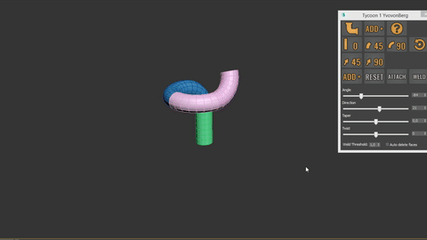

With Tycoon you can create custom bending objects and auto 'snap' them together
Features:
- Bend ANY custom mesh
- Copy and auto snap/align
- Twist support
- Change meshes
Found a bug in Tycoon Beta 1.1? Please report your problem to: info@yvovonberg.nl Please include the following info: Screenshot of your problem, short description + 3Ds Max version.
How to ....
Install Tycoon
Create a new TycoonTube
Finish & Weld
Custom meshes
Twist and Taper mesh
Workflow examples / ideas
Pipes
Rollercoasters
Ropes
Roads
Squid
Fence
Maze
Modulair II
Install Tycoon
Installation
Without macrobutton install:
1: Extract the tycoon.zip file.
2: Drag _tycoon in to your 3Ds Max.
3: Done!
With macrobutton install:
1: Extract the tycoon.zip file.
2: Place the "tycoon" folder in your 3Ds Max scripts directory.
2b: Restart 3Ds Max
3: Drag the tycoonMacro in to your 3Ds Max.
4: Go to custom interface > toolbars > category dropdown ... YvovonBerg_Tools > Tycoon Beta
5: Select Tycoon Beta and drag it to a place in your UI to dock it.
6: Launch the macro.
7: Done!
Create new tycoon tube
1. Click on the tube icon.
2. Click on a position in your viewport
3. Try the bending settings for changing the bend angle. Finish and Weld

1. Select all your pieces
2. If you used simpel TycoonPipes you can select the auto face delete checkbox (Warning only works if you using the default/standard TycoonCylinder and you have not made any changes to the mesh)
3. Press the weld button Custom meshes
1. Select the custom mesh.
- Rotating your custom mesh to work for the world Z axis is no longer necessary, simply rotate the pivot of your mesh into the direction you want to build and hit ADD+ It will also works if the custom mesh is rotated. You can now also flip the direction by changing the pivot to the other side and rotating it. (Should be automatic in a future update))
2. Press the ADD+ button in the first row, Tycoon will create a custom tycoon mesh. (You can edit/tweak your mesh in the customPiece modifier)
3. Press the ADD+ button Twist and taper mesh
1. Select the current tycoon mesh
2. Change the taper setting, ADD+, if you want to reset the value again, right click on the arrows on the right of the inputfield. Twist mesh
1. Create a few cylinders/tubes
2. Collapse/Attach them together, so it is a single mesh,
3. Center the pivot and align it to the bottom of your mesh.
4. Press the first ADD+ button.
5. Change the twist value.
Made by / Author: Yvo von Berg
Technical Artist & 3D Generalist
If you find a way to to break Tycoon / bug reports : please let me know!
If you guys have any questions/suggestions/comments/ideas for tools or other tech/workflows: